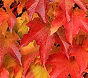
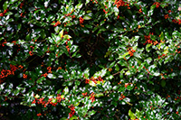
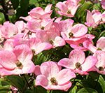
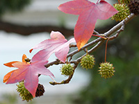

Choosing native trees for your yard is a smart decision that reaps numerous benefits for both your property and the environment. Native trees, such as the Red Maple and Eastern Redbud, are perfectly adapted to New Jersey’s climate and soil. Being native ensures robust growth and longevity. These trees provide essential services like shading your home, reducing energy costs, and serving as effective windbreaks. Moreover, their natural beauty enhances curb appeal and supports local wildlife, offering food and habitat for birds and pollinators. In contrast, non-native species often require more maintenance, are prone to pests and diseases, and can disrupt local ecosystems by outcompeting native flora. By planting native trees, you contribute to a healthier, more sustainable environment while enjoying the practical and aesthetic advantages they bring to your landscape. Ben Bivins Tree Experts, a company that provides Smithville tree service, highly recommends planting native species.
Plant Native Species for Best Results
Thes native trees listed here can enhance residential properties in a variety of ways. Whether it be providing shade, acting as windbreaks, adding curb appeal, or supporting local wildlife, native trees are beneficial. They are also well-adapted to New Jersey’s climate and soil conditions. All of this makes them some of the best choices for landscaping.

Red Maple (Acer rubrum)The Red Maple is a popular tree for neighborhoods. It provides shade for properties and homes. Red maples grow quickly and can provide ample shade, helping to cool homes and reduce energy costs during summer. As far as curb appeal, their striking red foliage in the fall adds significant aesthetic value. Furthermore, they provide habitat and food for various birds and small mammals.
Eastern Redbud (Cercis canadensis)
With beautiful pink flowers in the spring, Eastern Redbuds increases the aesthetic appeal of a property. When it comes to shade coverage, though not as large as some other trees, they still provide moderate shade. Lastly, outside of the traditional benefits for birds, the flowers of the Eastern Redbud attract pollinators like bees and butterflies making it extremely popular for yards.
American Holly (Ilex opaca)

Boasting evergreen leaves and bright red berries, the American Holly provides year-round visual interest. In addition, its dense foliage makes it an excellent windbreak. Wildlife support includes being a food source for birds and the dense foliage offers nesting sites for an assortment of wildlife.
Eastern White Pine (Pinus strobus)
Tall and dense, the Eastern White Pine serves as an effective windbreak protecting homes from cold drafts. They can also grow very large offering substantial shade and their soft, long needles and overall shape are visually appealing to many homeowners. Lastly, their seeds are a food source for birds and small mammals.

Flowering Dogwood (Cornus florida)The top benefit noted by homeowners is certainly the beauty of this tree. With white or pink flowers in the spring and red foliage in the fall, Dogwoods add year-round allure. In addition to the visual benefits, Dogwoods provide light to moderate shade, making it suitable for smaller yards and their flowers and berries attract pollinators and provide food for birds.

Sweetgum (Liquidambar styraciflua)
This tree has a large canopy that offers substantial shade. Homeowners will also appreciate the visual interest offered by their star-shaped leaves and vibrant fall colors. Finally, various bird species enjoy eating the seeds of the Sweetgum.
Northern Red Oak (Quercus rubra)
Large and spreading, the Northern Red Oak offers significant shade for properties. The acorns of oak trees are perhaps most well known for being a crucial food source for many animals, including squirrels and birds. As far as curb appeal goes, the Northern Red Oak has a strong, stately appearance with attractive foliage.
Smithville Tree Service Companies Like Ourselves Always Recommend Native Trees
Incorporating native trees into your yard is a commitment to fostering a healthier ecosystem and enjoying a myriad of benefits. By opting for trees that naturally thrive in New Jersey, such as the resilient American Holly or the stately Northern Red Oak, you’re ensuring a vibrant, sustainable environment that supports local wildlife and reduces your ecological footprint. Native trees require less water, fewer chemicals, and minimal care compared to their non-native counterparts. This makes them a smart, eco-friendly choice. They not only enhance your property’s beauty and value but also play a crucial role in preserving the region’s biodiversity. As you plan your landscaping projects, consider the lasting positive impact of native trees. By planting them, you’re not just beautifying your yard – you’re contributing to the health and sustainability of your community and the planet.